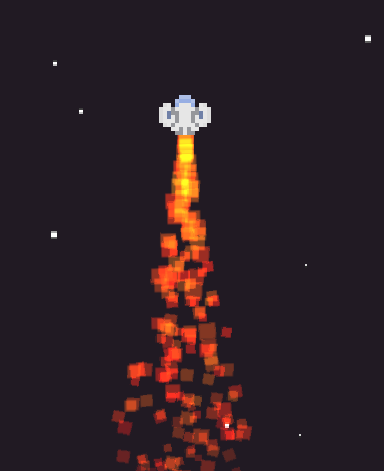
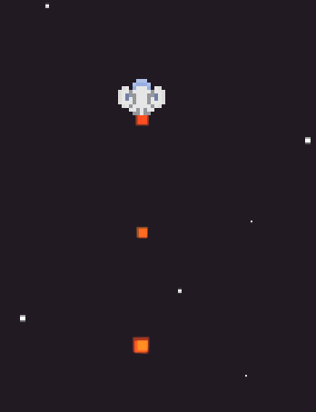

I apologize, I realize now that my question might not be as clear as I thought.
As an example, here is a fire effect that I made

It looks great, except for when my player is travelling at higher velocities

The ParticleEmitter2D itself follows the player node accurately, and the reason for the particles appearing like this is due to them being created at regular intervals, allowing the ParticleEmitter2D to travel away from the previously emitted particle, therefore creating a broken stream of particles.
A simple suggestion would be to increase the emission frequency of the particles. I have tried that, and the results do not differ because the particle system updates at regular intervals, only creating new particles ones it “trips” past the desired interval.
The underlying issue here
is that when a particle is created, it does not properly maintain the current velocity of the ParticleEmitter2D’s node.
My ship has a velocity of (0, 50000), and the particles being emitted have a velocity of (0, -70), when really they should have a velocity of (0, 50000 - 70).
As another example,
if I were to create a ParticleEmitter2D for the smoke that emits from the end of a gun node, and were to create a playable area inside of a moving spaceship node where the player could shoot bullets inside the spaceship, the smoke particles would have the same broken stream effect. The velocity of the particles should be relative to the ship, but are relative to the world by default.
And
that
is what I am tried to overcome. I would like velocities of the fire particles to be relative to the spaceship.
Thank you for your suggestion!